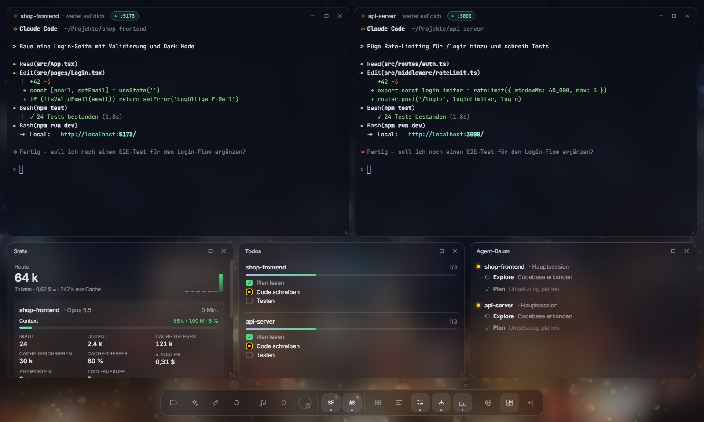
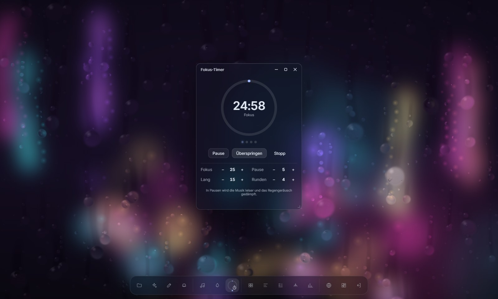

Everything Claude does, in one quiet place
Claude Code is great in a terminal. It gets hard to follow when three sessions run at once. VibeDesk keeps them in view without getting loud.
- Sessions you can read at a glanceA dot per session: working, waiting for you, done. A soft chime when one finishes, a card when Claude asks for permission.
- Approve from your desk or your phonePermission requests show up as cards. Pair your phone once and answer from the couch, no app to install.
- See the result while it is builtWhen Claude starts a dev server, the preview opens by itself. Point at an element to tell Claude what to change, console errors go straight back to it.
- A terminal that behavesCopy and paste like Windows Terminal, attach files with a click, paste screenshots, clickable file paths, search, and a shell right next to Claude.

- Rain, lofi and a focus timerAnimated scenes with rain on the glass, an internet lofi radio and a pomodoro timer that lowers the music during breaks.
- A memory for every projectVibeDesk keeps notes about your project and hands them to Claude at the start of each session, so it does not have to rediscover everything.
- A watcher that taps your shoulderIf a session hangs, loops on the same error or runs out of context, you get a calm notice with a fix button.
- Git without the command lineSee what changed, commit, push and undo from a window instead of memorising commands.

Same Claude Code, better room
VibeDesk runs the official Claude Code CLI with your own plan. It adds the parts a terminal can’t show.
Claude Code in a terminal
- One tab per session, you check each one
- Permission prompts wait until you look
- Todos and sub-agents scroll away
- Dev server, browser and git are separate apps
Claude Code in VibeDesk
- Every session’s status in the dock
- Approvals as cards, on screen or on your phone
- Live todos, agent tree, tokens and context
- Preview, editor and git in the same room
Up and running in three steps
VibeDesk can install Node.js and Claude Code for you if they are missing.
- Download the installer
Grab
VibeDesk-Setup.exefrom the latest release. - Get past SmartScreen
The installer is not code-signed yet, so Windows may warn you. Click “More info”, then “Run anyway”. You can check the file with
Get-FileHashagainst the SHA256 in the release notes. - Start your first project
The welcome tour checks your tools, then you name a project and Claude starts in its own window. Updates install themselves.
Honest answers
Is it really free?
Yes. VibeDesk is MIT-licensed and has no paid tier, no account and no telemetry. You only need your own Claude plan or API key for Claude Code itself.
Is this made by Anthropic?
No. VibeDesk is an independent open-source project that runs the official Claude Code CLI. Claude is a trademark of Anthropic.
What leaves my computer?
By default only update checks on GitHub and the lofi stream. Discord, Twitch, the phone companion and the lounge only connect when you turn them on. Error logs stay local; “Report a bug” just opens a pre-filled GitHub issue that you can edit before sending. The full list is in the README.
Does it slow my laptop down?
The rain is drawn on the GPU and capped in frame rate; on battery VibeDesk switches to an energy-saving mode automatically.
Mac or Linux?
Not yet. VibeDesk is built for Windows 10 and 11 for now.
Is the app in English?
The interface is in German right now. An English interface is the next thing on the list.
Where do I ask questions or report bugs?
Everything goes through GitHub Issues: questions, bugs and ideas.